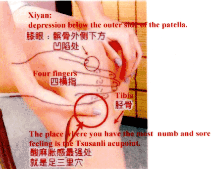
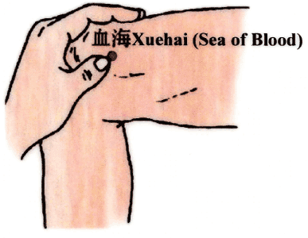
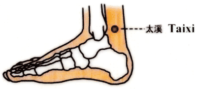
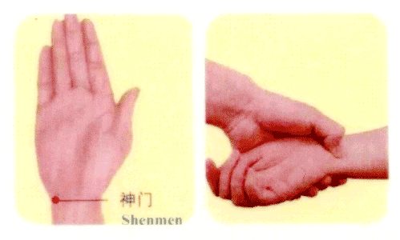

For appointment, call (727)-488-0202
9365 U.S. Highway 19 North, Suite C
Pinellas Park, FL 33782
Tsusanli belongs to Stomach meridians (one of twelve meridians of the human body) which is an acupoint frequently used to treat spleen and stomach diseases. The spleen and stomach constitute the foundation of health. The food we eat and the water we drink can't be turned into nutrition and supplied to the whole body without the spleen and stomach. The role that the spleen and stomach plays in the human can be compared to a food processing plant, and if that food processing plant doesn't work properly or have sufficient food suply, the body has to suffer from starvation, which further causes the person to look haggard and withered.
Respiratory diseases, cardiovascular diseases, urinary system diseases, gynecological diseases, consumptive diseases, and all kinds of deficiencies, etc. are properly caused by the poor functions of the spleen and stomach. However, those health problems that might be caused by deficiencies of the spleen and stomach can be treated and cured by Tsusanli.
The body is like a skyscraper and the spleen and stomach constitutes the foundation of the building. Healthy spleen and stomach is the precondition for the health of the entire body. Tsusanli is just like the bodyguard of the spleen and stomach. So, it is strongly suggested that, those who crave for beautfiul and healthy looks make good use of their Tsusanli.
Where can you locate the Tsusanli? You can find it by sitting down: First, sit down straight and bend your legs at a right angle; with your palm pressed on the knee at the side of your arm and the upper end of the knee surrounded by the Hegu area (between the thumb and the index finger), put the rest of the fingers except the thumb downward. Press the tibia using your index finger and the place unde the fingertip of the middle finger is where the Tsusanli is located.
This acupoint is quite useful and you can press and rub it when you have time, without worrying about the techniques and times. The frequent moxa-moxibustion to the acupoint is also suggestible and each time of moxa-moxibustion lasts for about 15 minutes to the extent that you feel warm at the acupoint.
Blood is essential to women. To enrich and nourish blood is critical to having glowing skin. How can one nourish blood? In addition to a healthy diet and ensuring nutrition is being supplied to the blood, it is feasible to nourish blood with good use of acupoints. Xuehai is a great resource in enriching and nourish blood.
You can simply tell by the name of Xuehai (sea of blood) that it is the "sea" of vital energy and blood of the human body, and it is quite resourceful and inexhaustible. Xuehai belongs to the spleen meridian, and according to TCM, the acupoint is the place where the blood lines of human body converge, governing all diseases related to blood. Therefore, the efficacy in terms of nourishing and enriching blood by it is quite self-evident.
How can you locate Xuehai? It is located in the inner thigh, 2 inches (about 6.67 cm) above the end of the patellar bottom at the inner side (the width of the thumb measures 1 inch). You can lie on your back in bed and stretch out your legs when locating this acupoint. You can feel muscles bulging 2 inches above the upper end of inner side of patella. Xuehai is located in the middle point of the muscle.
How to use Xuehai? The simplest way is to do self-massage. You can just press and rub the acupoint when you have time; of course, moxibustion is highly suggested.
Let's analyze the name of it first. "Tai" means large size and great quantity. "Xi" means creek. Therefore, when combined, they roughly mean many creeks. How does it benefit women's facial appearance? As the saying goes, woman is made of water. You can't have rejuvenated skin without the nourishment of water. Taixi is an important acupoint which provides the human body with its "water source."
Taixi is the fundamental acupoint of the Kidney meridian. Of human organs, the nature of the kidney belongs to "water," and it is the place where "water" is preserved. If the renal function is poor (the so-called kidney deficiency), and the "water" inside the body is unable to control the "fire," the results equate to excessive fire in heart. This person with excessive fire will have symptoms like insomnia, anger, thirst, constipation, dry skin, gloomy complexion, etc. If these symptoms are the case, beauty is out of the question!
Taixi is the fundamental acupoint of Kidney meridian and it can be compared to the warehouse of Kidney vitality. In the case of insufficient storage of kidney vitality, the vitality can be improved by means of the distribution from the warehouse. Therefore, Taixi is quite indispensable in obtaining good-looks. Moreover, Taixi is a major acupoint of supplying Qi and the frequent use of Taiqi helps the body to be filled with Qi to stay healthy.
Where can you find Taixi? It is easy to find the location of Taixi. It is located in the inner side of the foot, behind the malleolus medialis. The depression between the Achilles tendon and the medial malleolus tip is Taixi. Taixi is also very simple to use: either by massage or moxa moxibustion. You can massage whenever you have time or apply moxa moxibustion for 15 minutes. Frequent moxa moxibustion ensures ample kidney vitality and helps you to have rejuvenated and glowing skin.
You can know that it is an important acupoint just from its name: "God's door." Shenmen belongs to the heart meridians. According to Chinese medicine, the heart governs mind and consciousness. All the health problems related with consciousness can be treated using the acupoint of Shenmen.
Shenmen is the fundamental acupoint of heart meridian and its function can be compared to the warehouse where the Qi of heart meridians is stored. Due to great work pressures, modern women are apt to have spiritual problems such as insomnia, forgetfulness, irritability, etc. Long hours of working can cause a fatigue and haggard look. How to handle this problem? Tranquilize the mind by nourishing the heart! Shenmen, like a bodyguard works at any time.
Where is Shenmen located? It is located in the wrist. There is a portruding round bone at the upper corner of hypothenar of the palm and you can feel a large tendon at the rear end. The cross point between the outer edge of the tendon and the end of ulnar (at the side of the little finger) of horizontal wrinkle close to the palm.
Frequent pressing and rubbing of Shenmen helps soothe the nerves and improve facial appearance, which achives many things at one stroke. Please note that when using the above acupoints for health and beauty purposes, you don't need to massage every acupoint if you don't have enough time. You can randomly massage one or two of them, as long as you do this frequently.
Acupoint is a God-sent treasure and it spreads all over the body, which is green, safe, and convenient. It is suggested that those who crave for beautiful looks make good use of acupoints, and make them become the "bodyguards" of health and beauty. Thanks for reading and we wish that you look 40-years-old at the age of 60!
